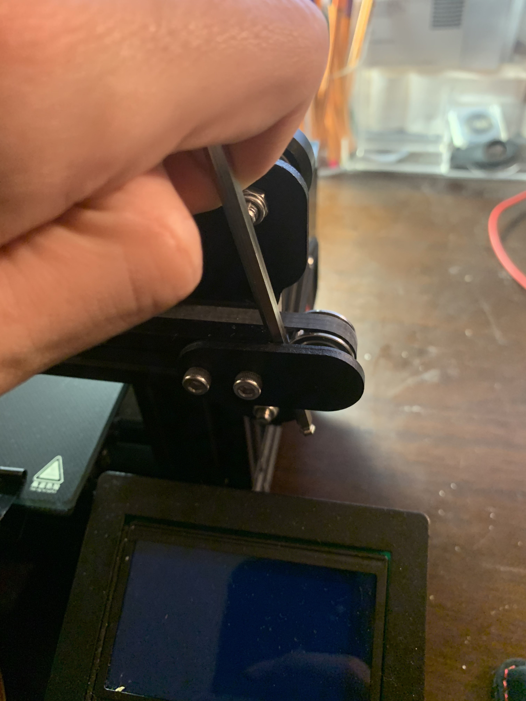

assembly! (2/2)
Finished the assembly! This took another ~90 mins or so, bringing the total assembly time to two and a half hours or so. Most things in part 2 went without a hitch again, thanks to the build videos.
By far the most ~colorful~ part of pt 2 was that when I realized I (a) put the extruder on such that the head was facing the back of the printer and (b) that I had idly overtightened the M4x16s attaching the right-hand wheels to the X-axis extrusion, so when I tried to take them out I stripped the hex into a circle :') My excuse for this blunder was that I was feeling Not-Good after getting vaccinated(!!). This was remedied with some vise grip pliers and a walk to the hardware store to pick up a couple new M4x16s.
The most helpful tip in the half of the assembly was in tightening the X-axis belt. Using only my hand to push the tensioner, I couldn't get it as tight as I wanted (and nowhere near as tight as the Y-axis belt that came pre-attached on my Ender). A useful tip I found was to use e.g. an allen wrench to get some more leverage:

The belt was significantly more taught after this, as evidenced by the little twang I could get from snapping it. The last edit I had to make was to move the Z-stop switch up to accomodate for the glass bed I have. Then I fired things up and auto-homed for the first time on the new printer :) Next step will be bed levelling - saving that for later!